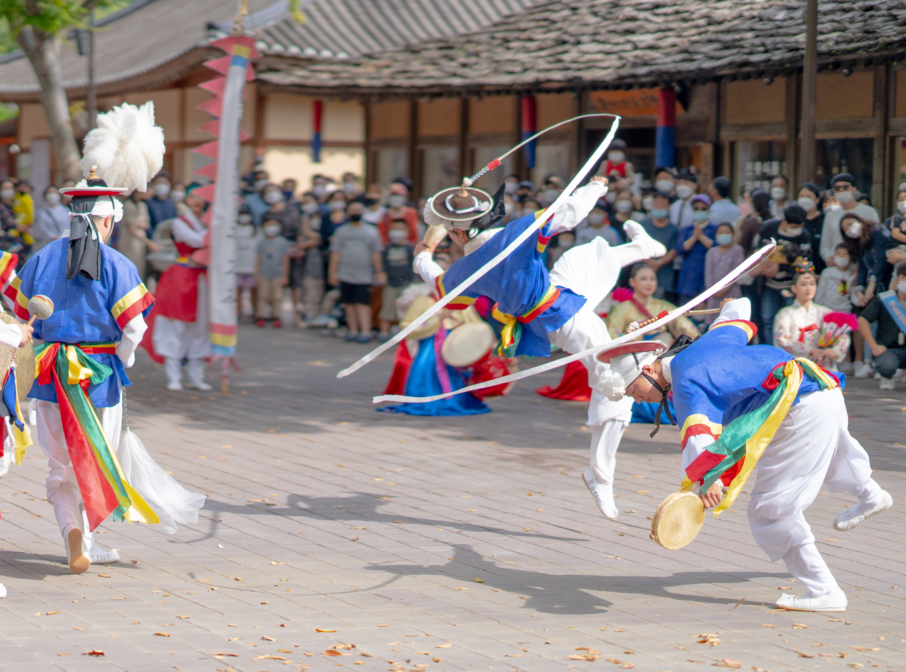

Korea (or Korean Peninsula) is a region in East Asia.
 Since 1945 it has been divided into the two parts which soon became the two sovereign states: North Korea (officially the "Democratic People's Republic of Korea") and South Korea (officially the "Republic of Korea"). Korea consists of the Korean Peninsula, Jeju Island, and several minor islands near the peninsula. It is bordered by China to the northwest and Russia to the northeast. It is separated from Japan to the east by the Korea Strait and the Sea of Japan (East Sea)During the first half of the 1st millennium, Korea was divided between the three competing states of Goguryeo, Baekje, and Silla, together known as the Three Kingdoms of Korea. In the second half of the 1st millennium, Silla defeated and conquered Baekje and Goguryeo, leading to the "Unified Silla" period. Meanwhile, Balhae formed in the north, superseding former Goguryeo. Unified Silla eventually collapsed into three separate states due to civil war, ushering in the Later Three Kingdoms.Toward the end of the 1st millennium, Goguryeo was resurrected as Goryeo, which defeated the two other states and unified the Korean Peninsula as a single sovereign state. Around the same time, Balhae collapsed and its last crown prince fled south to Goryeo. Goryeo (also spelled as Koryŏ), whose name developed into the modern exonym "Korea", was a highly cultured state that created the world's first metal movable type in 1234.[3][4][5][6][7][8] However, multiple incursions by the Mongol Empire during the 13th century greatly weakened the nation, which eventually agreed to become a vassal state after decades of fighting. Following military resistance under King Gongmin that ended Mongol political influence in Goryeo, severe political strife followed, and Goryeo eventually fell to a coup led by General Yi Seong-gye, who established Joseon in 17 July 1392.